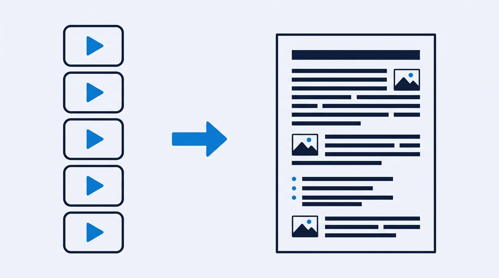

Everything I learned turning videos into documents.
I built VideoDoc because ChatGPT could not watch the lectures I study from. These guides are the honest version of what works: free ways, paid ways, and the limits nobody prints on the pricing page.

The full picture: free ways, paid ways, and how to get the slides out too, not just the words.
Convert a YouTube video to PDF, slides includedA PDF your AI can actually read, with the on-screen slides and code saved as images.
YouTube video to text: 3 ways that actually workThe built-in transcript, a free browser tool, and a desktop app. When each one wins.
Get the transcript of any YouTube videoCaptions on, captions off, it does not matter. Every word with timestamps.
Can ChatGPT watch a video? The honest answerNo AI chat can watch a video today. What actually happens when you paste a link, and the bridge that works.
How to turn images into a document your AI can readForty loose screenshots read badly. One ordered file with captions reads well. Here is the free way.
Stop pausing and scribbling. Let the lecture write its own notes, then study on top of them.
Turn any course video into study notes you can searchThat course you bought becomes searchable notes with the slides included.
How to study from YouTube with AIMy exact daily setup: video in, document out, AI tutor on top of it.
Turn a YouTube playlist into one documentA 40 video course becomes one file you can search, quote and hand to your AI.
Summarize a YouTube video with ChatGPTWhy pasting a link fails half the time, and the two step way that keeps the details.
The hour long webinar becomes a guide your whole team reads in five minutes.
Turn training videos into SOPs people actually readRecord the process once, get a written SOP with real screenshots out of it.
How to extract slides from a video presentationGet the actual slides out of a talk as images, matched to what the speaker said.
How to extract code from a video tutorialRead the code straight from the video in sharp screenshots instead of typing from pause.
Turn a video into a blog post in your own wordsOne video becomes an article without retyping a thing, and without sounding like a robot.
How to extract every frame from a videoFour images a second, identical ones dropped, each named by its exact moment.
GTA 6 Extended Look, frame by frame: build your own breakdownAbout 48,000 frames and roughly 300 shots. How to step through it and build something searchable.
How to convert a video into images onlyThe pictures without the words: no transcript, no PDF, just a numbered folder.
How to turn a screen recording into documentationA colleague recorded how to do the thing. Get it written down, screenshots included, without uploading it anywhere.
Save the actual video file, single videos or whole playlists, plus the copyright basics in plain words.
TikTok video to textHooks, scripts and recipes out of TikToks, as clean text with timestamps.
Transcribe a video free, without uploading itA free transcript in your browser where the file never leaves your machine.
Offline video transcription: why local beats the cloudWhat actually happens to your video on cloud tools, and when local wins or loses.
Best video to text converters in 2026An honest comparison, including the places where my own tool loses.
How to black out faces in video screenshotsSolid black over the webcam bubble, in the frames and in the document, counted honestly.
What local really means in a video to text converterThe full list of what the app contacts, and a free five minute test that proves your file stayed put.
Reading about it is slower than trying it.
The free version runs in your browser on a file you already have. Nothing uploads, no signup. When you need YouTube links, playlists and the on-screen slides, Pro is one payment of $19, lifetime.